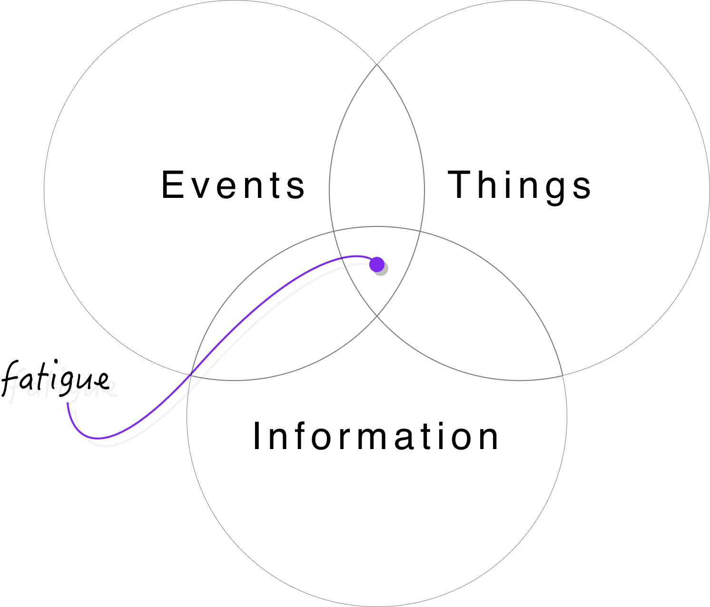

Clean out for composure
Decisions, decisions… endless. The more choices you have to make, the more foggy you will be. And tired. And that'll translate to wasted days, overwhelming moments and frustrated feelings. If you want to avoid that, then reduce! Reduce events, opinions, objects in your life. This'll let you save cognition by reducing choices. With less to focus on comes calmness from within. By reducing events, information, and things, you will regain your composure.

First on the list is events. This category could include obligations, movements, projects, travels, new activities. Everything that comes with a timeblock. Timeblocks, for me, usually makes me antsy in anticipation, may stretch me thin, may make me more reactive instead of proactive, etc. Every event comes with a ton of decisions; what to wear, when to leave, how to get there, what to eat, what to talk about, what to omit, how long to wait, what to know, how to begin, what tools, etc. I'm sure everyone's experienced the hour slump before and after a meeting. And how difficult it is to begin a new project. Instead of letting them stack up and dominate my mental state, I just choose a few carefully. I choose the ones that leave me more energized1. The rest can be dealt with later (or never).
For example, maybe I'll have an upcoming appointment to meet a friend, a different project I need to start since I'm waiting for something to finish on my current one, and then I'm getting back into running. That's it. Any more and I'll be too scattered-brain to create favorable outcomes for any of these events. Of course, events that don't feel like timeblocks are fine i.e. reading a book you like, or being quite deep into a project.
Second, information. Endless information. The net is scary this way. There is just too much information. And whether you're conscious of it or not, you have to decide every comment's worth. I would contend people are more influenced by pseudo-anonymous opinions online than their friends. Yet we all often disregard this fact.
You have to decide every comment's worth.
The dirty secret is most of it is useless. Knowing that a 3.4 earthquake just happened in the north district doesn't help you. Nor seeing what people are up to unless you're getting ideas from it. By freeing up the space these facts would take, you can hone in on information that IS valuable. You can hone in your decision matrix. I limit information exposure by blocking YouTube sections or social sites, news sites, etc. with uBlock Origin and my /etc/hosts file. This isn't to say that the internet is worthless: there are neat blogs waiting for you2.
And finally, possessions. Physical possessions. Virtual possessions. Mental possessions. All of the stuff you got in your brain, on your bed, in your screen - all adds to decision fatigue. How many tools do you rely on? How many active projects are "in the works"? How many "gotchas" do you have with your mental processes? How efficient is the energy transfer of these things, whatever they're needed for? It's a big category, and a little vague I'll admit. But you can see it as any sort of "thing" that attaches itself to you, or fades into the background (like projects).
You can clean up by reducing clutter, reducing products, reducing software, reducing miscellaneous bookshelf sitters. What you read, how you perform tasks. The less things and convoluted ideas there are, the less steps needed to perform, the less you need to keep track of. Less decisions. It all results a clear focus and a calm mind.
If you begin to tackle just one of these categories you will feel better. The keyword is begin: it's a continual shed. It's not a one-and-done. Just taking 20 minutes every couple of days to reduce one of these vectors is all it takes to start building some dividends. I hope these categories help you notice what may be out of control for you.
Footnotes:
There are only so many events that energize me. Most events are an investment of energy for later returns. If possible, I prefer zero timeblocks. To where whatever activity I'm doing feels natural to me, like reading.